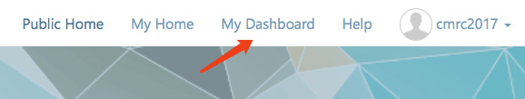
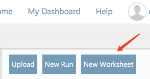
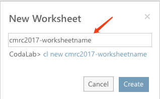
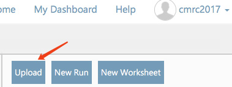
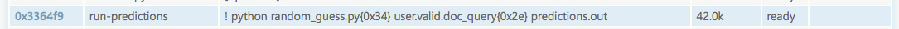
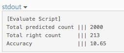
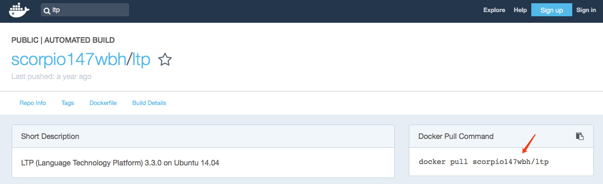

提交流程
总览
开发集/测试集系统提交时间如下表所示。
| 事件 | 时间 |
|---|---|
| 提交系统验证开发集 | 2017年7月13日 ~ 2017年8月13日 |
| 提交系统验证测试集 | 2017年8月14日 ~ 2017年8月18日 |
本次系统提交使用的是CodaLab在线提交系统。参赛队伍需要在上述时间点内提交对应的系统。下面对CodaLab在线提交系统给出使用说明。
请各参赛队伍预留充分的时间熟悉Codalab提交系统！
官方Tutorial
请参考：https://github.com/codalab/codalab-worksheets/wiki
注册Codalab账户
请根据实际情况填写注册表单，注册流程不再赘述。
链接：https://worksheets.codalab.org/account/signup
注册完毕后请将用户名发给评测会务组，以便加入到特定的group中。
上传代码&源程序
以下以random guess为tutorial，请参考（需加入到group才有权限访问）：https://worksheets.codalab.org/worksheets/0xf08b89f5a3ea46909831b027ba76aa76/
请勿直接在该worksheet中运行程序，需按照下面的步骤复制到自己的worksheet中。
1）注册完毕之后，登陆到系统中。点击右上角的My Dashboard

2）新建一个Worksheet，名称可以根据实际情况填写


3）进入到新建的worksheet，首先设置该worksheet的权限
【注意】请一定在上传任何数据之前设置权限，否则可能导致源代码泄露！具体权限请参考会务组邮件！
4）点击右侧的Upload上传参赛系统（支持zip文件，上传后自动解压缩）

5）复制官方的开发集文件、评测文件
【填空类】
cl add bundle 0xee779734bcca4ab1b7acfed3c615f984 .
cl add bundle 0x731b40697bf7433295e0e07674a69498 .
【用户提问类】
cl add bundle 0x70088f476cbb4c529abf00532797436f .
cl add bundle 0xa40067c4085d4b5fbd00875a98c0b7b2 .
【评测文件】
cl add bundle 0xc7aaa53ba65b45c4b56c47f94322c4d8 .
6）运行测试程序
在本例中我们使用如下命令，
cl run cloze.valid.doc_query:cloze.valid.doc_query random_guess.py:random_guess.py "python random_guess.py cloze.valid.doc_query predictions.out" -n run-predictions
如果需要其他依赖，可在命令中添加
--request-docker-image tboquet/kenacuthe7hc5
其中tboquet/kenacuthe7hc5可替换成自己需要的环境，该包中提供了常见的深度学习所使用的库。
选择适合自己程序的环境包：https://github.com/codalab/codalab-worksheets/wiki/Execution#overview-how-the-worker-system-works
常用的docker请参考最下方的“常用Docker”一栏。
7）等待程序运行
正常情况下显示：running
非正常情况显示：failed
如果出错，则根据stderr的输出对自己的程序进行debug。
8）程序运行完成后会显示为：ready

9）输入如下命令进行开发集的预测
cl make run-predictions/predictions.out -n predictions-dev.out
cl run predictions-dev.out:predictions-dev.out cloze.valid.answer:cloze.valid.answer evaluate.py:evaluate.py "python evaluate.py predictions-dev.out cloze.valid.answer"
10）运行结束后，右侧会显示预测结果，如下图

常用Docker
Codalab上需要加载自己的环境文件，现在有一些共享的环境供大家参考。
或者大家也可自行在http://hub.docker.com 中搜索自己需要的环境&版本。
以下是常用的docker（根据大家上报的环境依赖调查，以下命令加在运行测试脚本时）：
1）Theano + Keras
--request-docker-image tboquet/kenacuthe7hc5
2）Tensorflow
--request-docker-image tensorflow/tensorflow
3）CNTK
--request-docker-image microsoft/cntk
4）PyTorch
--request-docker-image floydhub/pytorch
5）LTP
--request-docker-image scorpio147wbh/ltp
6）Anaconda
--request-docker-image continuumio/anaconda
7）Tensorlayer
--request-docker-image gmueller/tensorlayer
8）Torch
--request-docker-image kaixhin/torch
提交开发集/测试集系统
为了确保系统能够在测试集上正常运行，需要参赛队伍在正式测试之前将开发集验证系统提交给评测方。各参赛队伍需要向评测委员会提供如下内容：
1）系统所在的worksheet的UUID
2）能够顺利跑通参赛系统的命令行（以cl run开头的命令），即输出预测结果
请将上述内容通过邮件（cmrc2017@126.com）发送给评测会务组。
另外，需要注意：
1）与答案预测程序关联的bundle需对会务组可见；
2）参赛单位只需提供输出答案的命令，不需要对结果进行评价（即使用evaluate.py）。故请参赛单位不要把预测答案和评价写在同一个脚本中，这两步是需要分步进行的步骤。
常见问题（持续更新中）
1、python程序报import错误
答：请尽量自包含需要的Python包。或者使用已有的docker文件。例如需要ltp，则在http://hub.docker.com中搜索ltp，如下图

然后在运行测试程序的命令中加入
--request-docker-image scorpio147wbh/ltp
2、无法加载多个docker
答：为了保证环境的一致性，Codalab无法加载多个docker。如对环境版本要求严格，请自行配置docker并上传到hub.docker.com上，并在使用时加载对应的docker。
3、如何使用GPU资源
答：Codalab上提供了M60 GPU的支持，只需在运行命令中加入--request-gpus 1。
联系我们
如运行中出现问题，请联系我们：cmrc2017 [at] 126 [dot] com